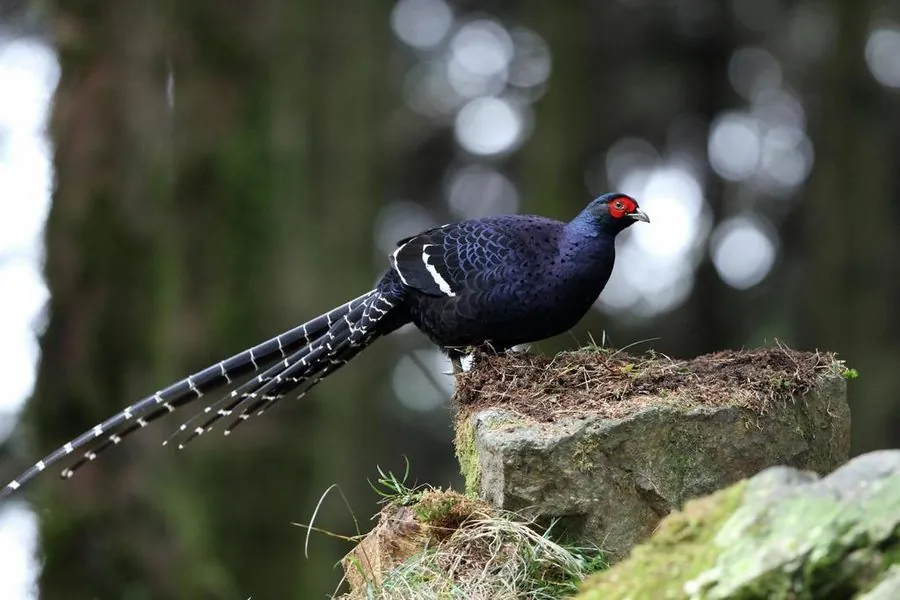

鸟类 · 动物界
黑长尾雉 Syrmaticus mikado

台湾中高海拔云雾林中的长尾雉，雄鸟深蓝黑带白斑，尾羽极长并有白色横斑，是台湾特有种，1906 年才被描述。
- 分类
- 门脊索动物门纲鸟纲目鸡形目科雉科属长尾雉属
- 栖息环境
- 台湾海拔 1600–3300 m 的云雾林、针阔混交林与箭竹丛
- 地理分布
- 中国台湾中央山脉等中高海拔山区，为台湾特有种
- 保护级别
- IUCN 近危（NT）
物种志
黑长尾雉雄鸟连尾体长约 86 cm，体重约 1–1.3 kg；雌鸟约 53 cm，体羽橄榄褐色并密布斑纹。雄鸟通体深蓝黑色，具金属光泽，翅上有一道白色横斑，尾羽很长且带白色横纹，脸部裸皮红色；雌鸟尾较短，羽色更具隐蔽性。
它是台湾特有种，栖息于海拔 1600–3300 m 的云雾林、针阔混交林与箭竹丛，常在山径旁和林下落叶层中觅食，食物包括嫩芽、种子、果实和昆虫。黑长尾雉生性机警，受惊时多快速奔跑或短距离滑翔。繁殖期在 3–5 月，每窝产卵 5–8 枚，由雌鸟孵化约 25–28 天。1906 年，研究者依据台湾原住民头饰上的尾羽首次描述该物种，如今它被视为台湾高山鸟类的代表之一。
形态与习性
- 食性嫩芽、种子、果实和昆虫
- 体长雄鸟约 86 cm，雌鸟约 53 cm
- 体重雄鸟约 1–1.3 kg
- 海拔1600–3300 m 的云雾林与箭竹丛
- 繁殖3–5 月，每窝 5–8 枚，孵化约 25–28 天
- 发现1906 年依据原住民头饰上的尾羽描述
趣味知识
- 黑长尾雉最早是通过台湾原住民头饰上的尾羽被科学界认识的。
- 雄鸟的尾羽上有整齐的白色横斑，在林下光线中像一道道亮线。
- 它生活在常年云雾缭绕的中高海拔山区，是台湾高山鸟类的代表。